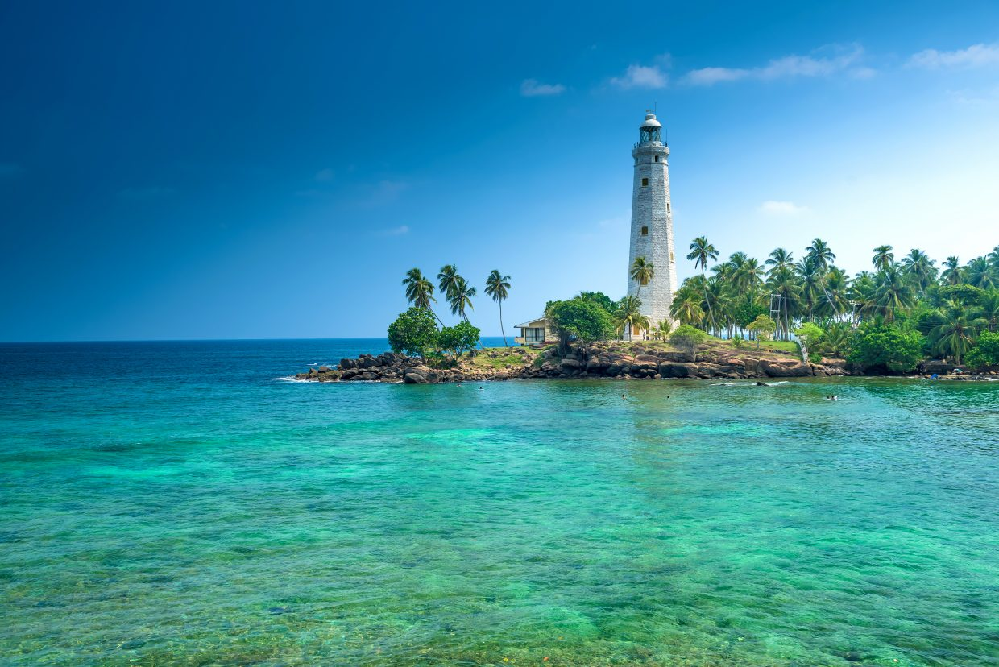

Beach
Play
photography
hiking
Sri Lanka Travel and Tourism
Welcome to the Land of Serendipity !!
Sri Lanka is one of the leading romantic destinations in the whole world. The land of serendipity brings spiritual tranquility and a chance to rediscover oneself. The beauty of this tiny island is simply breath - taking. Known for its enchanting ancient ruins, endless soft - sanded beaches, imposing mountains, colourful festivals, tempting water sports, dense wild - life, diverse ethnical groups and off the top hospitality from the local residents, Sri Lanka is bound to make you come back again. Sri Lanka Travel and Tourism brings all of this for you right under your fingertips so that you can discover the serene island for yourself. - Srilanka Travel and Tourism 2019- Destinations
- Activities
- Tour Packages
- Photo Gallery
TOP REASONS TO VISIT SRI LANKA in 2019
- Sri Lanka ranked top country for travel in 2019 by Lonely Planet
- Sun-bathing all year round, activities such as scuba diving, surfing
- Ancient cities and arch itecture dating back to more than 2500 years
- Considered as the ultimate romantic destination for honeymooners
- Safari trips and night camping in forests and wild life sanctuaries
- One of the most biodiverse countries in the world
"Sri Lanka Travel and Tourism were great from start to finish! Very quick response on the first vontact as well as planning our journey atendimh to our requirements. They met all our expectations from places to visit and hotels chosen, and they got us a driver for our 6 day stay that made it all possible. I highly recommend Sri Lanka Travel and Tourism, as our experience with them was excellent. "